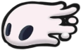
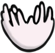
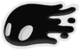

Itens e Habilidades

Equipamentos
Em Hollow Knight, o Cavaleiro pode encontrar e equipar diversos itens ao longo de sua jornada. Entre os mais importantes estão os amuletos, que concedem habilidades passivas e modificações no estilo de jogo. Esses equipamentos são essenciais para adaptar a gameplay ao estilo do jogador, facilitando combates, movimentação ou coleta de recursos.
-
Amuletos
Os amuletos são artefatos místicos que o Cavaleiro pode equipar em bancos, utilizando um recurso chamado Notches (entalhes). Cada amuleto ocupa um número específico de entalhes, e combinar os certos pode alterar drasticamente a experiência de jogo.
Icone Nome Efeito Custo em Notches Wayward Compass Exibe a posição do jogador no mapa (requer o mapa da área) 1 notch Shaman Stone Aumenta o dano de feitiços mágicos 2 notches Quick Focus Acelera a velocidade de cura com Focus 3 notches Soul Catcher Permite absorver mais Alma ao atingir inimigos 2 notches Steady Body Evita que o personagem seja empurrado ao atacar 1 notch Thorns of Agony Dispara espinhos quando o jogador sofre dano 1 notch -
Máscaras e Vessels
Ao longo da jornada, o Cavaleiro pode melhorar seus atributos vitais encontrando fragmentos de máscaras, vessels e o precioso item conhecido como Pale Ore. Esses itens são fundamentais para aumentar a sobrevivência e a capacidade de exploração do jogador.
-
Máscaras
Icone Fragmentos Necessários Aumenta Vida 4 fragmentos +1 ponto de vida 4 fragmentos +1 ponto de vida 4 fragmentos +1 ponto de vida 4 fragmentos +1 ponto de vida -
Vessels
Icone Fragmentos Necessários Efeito 3 fragmentos +1 recipiente de alma (armazenamento extra de Soul) 3 fragmentos +1 recipiente de alma (armazenamento extra de Soul)
-
Máscaras
Feitiços, Skills e Artes do Ferrão
Ao longo da aventura, o Cavaleiro adquire habilidades mágicas (feitiços), técnicas de combate (skills) e movimentos avançados com seu prego (artes do ferrão).Essas habilidades são essenciais para o progresso, seja em combate ou exploração, e são desbloqueadas ao interagir com personagens e locais específicos.
-
Feitiços
Feitiços são ataques mágicos que consomem Alma. Eles permitem causar dano à distância, romper defesas inimigas ou alcançar locais inacessíveis.Existem versões aprimoradas dos feitiços, obtidas em áreas secretas.
Icone Nome Efeito Custo Localização  Vengeful Spirit Dispara um projétil de alma para frente 33 alma Snail Shaman (Ancestral Mound)  Desolate Dive Golpe mágico descendente que quebra o chão 33 alma Crystal Peak 
Howling Wraiths Ataque mágico vertical que causa dano acima do jogador 33 alma Overgrown Mound  Shade Soul Versão aprimorada do Vengeful Spirit, com maior dano e alcance 33 alma Soul Sanctum (Spell Twister room) 
Abyss Shriek Versão aprimorada do Howling Wraiths com múltiplos gritos e maior dano 33 alma The Abyss (perto do ovo gigante) -
Skills
As Skills são habilidades passivas ou mecânicas especiais adquiridas ao longo da jornada. Elas ampliam as possibilidades de movimentação, exploração e combate. Desbloqueá-las é essencial para acessar áreas antes inacessíveis ou enfrentar inimigos com maior eficiência.
Nome
Mothwing Cloak
Efeito
Permite o Cavaleiro dar um dash horizontal
Localização
Greenpath (derrotando Hornet)
Observações
Essencial para desviar de ataques e atravessar gaps
Nome
Monarch Wings
Efeito
Permite um pulo duplo no ar
Localização
Ancient Basin (após derrotar Broken Vessel)
Observações
Importante para alcançar áreas elevadas e secretas

Nome
Crystal Heart
Efeito
Permite impulsionar o Cavaleiro horizontalmente com grande velocidade
Localização
Crystal Peak (após obter Desolate Dive)
Observações
Necessário para atravessar longas distâncias em trilhas de cristais
-
Artes do Ferrão
As Artes do Ferrão são técnicas de combate avançadas ensinadas por mestres ao longo da jornada. Essas habilidades ampliam os movimentos ofensivos do Cavaleiro, sendo fundamentais para enfrentar inimigos mais poderosos com estilo e eficiência.
Icone Nome Efeito Mestre Localização Corte Ciclone Executa um ataque giratório contínuo Mestre Mato Greenpath Corte Descendente Golpeia para baixo enquanto estiver no ar Mestre Oro Kingdom’s Edge Corte Descendente lança um ataque corpo-a-corpo de longo alcance no final da esquiva Mestre Oro Borda do Reino.